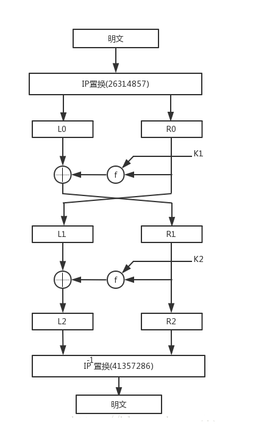

一、S-DES介绍
S-DES是DES算法的简化版,并没有什么实际使用的价值,只用于教学来理解DES算法的加密方法,那么可能就有小朋友会问了，为什么不是直接讲DES呢,Orz对于非信安的萌新来说,DES确实难,所以先看一下简洁版的S-DES的算法先预热预热。
二、整体加密流程
看起来很可怕，其实就是三个部分，一个是左边的加密算法，一个中间的密钥生成算法，一个右边的解密算法
按常理，先罗列一下所需要的前提条件
1 >数学知识储备
1.置换
离散上有的，切确来说就是，比如p8{8,2,6,4,1,7,5,3},就是转换下标顺序，比如输入ABCDEFGH,经过p8,得到的HBFDAGEC
2.循环
比较好理解，就是左移右移，溢出的位循环补齐，比如ABCD,左移一位就是BCDA
3.如何选S盒中的值
S盒就相当于一个二位数组，作用是输入一个4 bit的二进制流，输出一个2bit的二进制流
规则：当输入ABCD,则选择（AD，BC)为坐标，比如下方的S盒
S0:
{1,0,3,2},
{3,2,1,0},
{0,2,1,3},
{3,1,3,2},当输入0101时候，(AD,BC)= （01,10）=（1，2）=1=01 所以输出01，数组横纵坐标都是0~3
2>一些变量
P10 {3,5,2,7,4,10,1,9,8,6}
P8 {6,3,7,4,8,5,10,9} 注意这个置换选择输入10位输出8位
P4 {2,4,3,1}
IP {2,6,3,1,4,8,5,7}
IPI {4,1,3,5,7,2,8,6}
EP {4,1,2,3,2,3,4,1} 注意这个是扩展置换,输入4位输出8位
两个盒子
S0:
{1,0,3,2},
{3,2,1,0},
{0,2,1,3},
{3,1,3,2},
S1:
{0,1,2,3},
{2,0,1,3},
{3,0,1,0},
{2,1,0,3},3>简单的实现
None的作用是占据下标为0的数组值
def P10(key):
k = [None] + key
return [k[3],k[5],k[2],k[7],k[4],k[10],k[1],k[9],k[8],k[6]]
def P8(key):
k = [None] + key
return [k[6],k[3],k[7],k[4],k[8],k[5],k[10],k[9]]
def Shift(value):
return value[1:] + value[0:1]三、密钥生成
单独把密钥生成拿出来考虑的话，其实就是输入一个10bit的二进制，得到一个8bit的K1,一个8Bit的K2
假设我们的10位密钥 key=01111 11101
- 1、p10置换得到11111 10011 ,(p10表在上面有
- 2、记左半的为LK=11111,右半为RK=10011
- 3、LK,RK循环左移一位，得到LK=11111,RK=00111
- 4、LK,RK重组为11111 00111 做p8置换，得到
K1=0101 1111 - 5、抛弃第四条，把LK,RK再次循环左移两位得到LK=11111,RK=11100
- 6、LK,PK重组得到11111 11100,做p8置换得到
K2=1111 1100
到此位置密钥生成的算法我们就了解了
四、加密流程

函数解释
1.IP与IP-1
其实IP就是一个8bit到8bit的置换，IP-1是他的逆，（离散真香
实现就是
def IP(value):
v = [None] + value
return [k[2],k[6],k[3],k[1],k[4],k[8],k[5],k[7]]
def IPinv(value):
v = [None] + value
return [k[4],k[1],k[3],k[5],k[7],k[2],k[8],k[6]]2.SW函数
在大图中有一个SW的函数，在小图中因为更详细就没有，其实意思就是高四位和第四位互换
def SW(value):
return value[4:] + value[:4]3.剩下最后一个F函数
到目前为止，只剩下一个问题，就是F函数(大图的Fk函数)，我们先看F函数的功能参数和返回值参数：一个8bit的子密钥K1,一个4Bit的L0,一个4Bit的R0返回值：4bit的新R1
假如K1为0101 1111,左半(高位)为L0=0100,右半(低位)为R0=1001
- 1.对R0做EP扩展
（4,1,2,3,2,3,4,1）置换,得Rm’=1100 0011 - 2.Rm’与子密钥K1按位异或,得Rm’=
1001 1100 - 3.Rm’左半1001进入S0盒替代选择得S0(11,00)=S0(3,1)=11,右半1100进入S1盒替代选择的S1(10,10)=S1(2,2)=01,所以的到了Rm’=
1101 - 4.对Rm’做P4（2,4,3,1）置换,得Rm’=1101
- 5.Rm’与L0按位异或,得L0’=1001
- 6.L0’与最开始的R0组合得到
1001(L0’) 1001(R0) - 7.然后交换高低位,1001(R0) 1001(L0’)作为输入第二轮的输入即：L1=1001，R1=1001
到此第一轮循环完全结束，第二次也类似，第二轮结束的组合通过IP-1就算加密结束
五、简单的S-DES加密python实现

import string
plaintext = "11101010"
K = "0111111101"
rounds = 2
alphabet = string.ascii_uppercase
def bin_to_ascii_4bit(bin_string):
h1, h2 = split_half(bin_string)
return alphabet[bin_to_int(h1)] + alphabet[bin_to_int(h2)]
def P10(data):
box = [3, 5, 2, 7, 4, 10, 1, 9, 8, 6]
return "".join(list(map(lambda x: data[x - 1], box)))
def P8(data):
box = [6, 3, 7, 4, 8, 5, 10, 9]
return "".join(list(map(lambda x: data[x - 1], box)))
def P4(data):
box = [2, 4, 3, 1]
return "".join(list(map(lambda x: data[x - 1], box)))
def S0(data):
row = bin_to_int(data[0] + data[3])
col = bin_to_int(data[1] + data[2])
box = [ ["01", "00" ,"11", "10"],
["11", "10", "01", "00"],
["00", "10", "01", "11"],
["11", "01", "11", "10"]
]
return box[row][col]
def S1(data):
row = bin_to_int(data[0] + data[3])
col = bin_to_int(data[1] + data[2])
box = [ ["00", "01", "10", "11"],
["10", "00", "01", "11"],
["11", "00", "01", "00"],
["10", "01", "00", "11"]
]
return box[row][col]
def IP(data):
box = [2, 6, 3, 1, 4, 8, 5, 7]
return "".join(list(map(lambda x: data[x - 1], box)))
def IP_1(data):
box = [4, 1, 3, 5, 7, 2, 8, 6]
return "".join(list(map(lambda x: data[x - 1], box)))
def E_P(data):
box = [4, 1, 2, 3, 2, 3, 4, 1]
return "".join(list(map(lambda x: data[x - 1], box)))
def XOR(data, key):
return "".join(list(map(lambda x, y: str(int(x) ^ int(y)), data, key)))
def LS(data, amount):
return data[amount:] + data[:amount]
def SW(data):
data1, data2 = split_half(data)
return data2 + data1
def split_half(data):
return data[:int(len(data) / 2)], data[int(len(data) / 2):]
def int_to_bin(data):
return "{0:b}".format(data)
def bin_to_int(data):
return int(data, 2)
def generate_round_keys(key, rounds):
round_keys = []
k_h1, k_h2 = split_half(P10(key))
s = 0
for i in range(1, rounds + 1):
s += i
h1, h2 = LS(k_h1, s), LS(k_h2, s)
round_keys.append(P8(h1 + h2))
return round_keys
def encrypt(data, key):
round_keys = generate_round_keys(key, rounds)
ip1, ip2 = split_half(IP(data))
print("IP: {}".format(ip1 + ip2))
for i, r_key in enumerate(round_keys):
data = E_P(ip2)
data = XOR(data, r_key)
d1, d2 = split_half(data)
d1 = S0(d1)
d2 = S1(d2)
data = XOR(ip1, P4(d1 + d2)) + ip2
if i == 0:
print("First Fk: {}".format(data))
elif i == 1:
print("Second Fk: {}".format(data))
if i != len(round_keys) - 1:
ip1, ip2 = split_half(SW(data))
print("SW: {}".format(ip1 + ip2))
else:
ciphertext = IP_1(data)
print("IP-1: {}".format(ciphertext))
return ciphertext
def decrypt(data, key, comments=False):
round_keys = list(reversed(generate_round_keys(key, rounds)))
ip1, ip2 = split_half(IP(data))
if comments:
print("IP: {}".format(ip1 + ip2))
for i, r_key in enumerate(round_keys):
data = E_P(ip2)
data = XOR(data, r_key)
d1, d2 = split_half(data)
d1 = S0(d1)
d2 = S1(d2)
data = XOR(ip1, P4(d1 + d2)) + ip2
if comments and i == 0:
print("First Fk: {}".format(data))
elif comments and i == 1:
print("Second Fk: {}".format(data))
if i != len(round_keys) - 1:
ip1, ip2 = split_half(SW(data))
if comments:
print("SW: {}".format(ip1 + ip2))
else:
plaintext = IP_1(data)
if comments:
print("IP-1: {}".format(plaintext))
return plaintext
if __name__ == "__main__":
print("需要加密的明文为: {} ({})".format(plaintext, bin_to_ascii_4bit(plaintext)))
print("Key: {}".format(K))
print("\n以下是加密的过程\n-------------------\n")
C= encrypt(plaintext,K)
print("加密后的密文为: {} ({})".format(C, bin_to_ascii_4bit(C)))
print("\n以下是解密的过程\n-------------------\n")
d = decrypt(C, K, comments=True)
print("解密后的明文是: {} ({})".format(d, bin_to_ascii_4bit(d)))